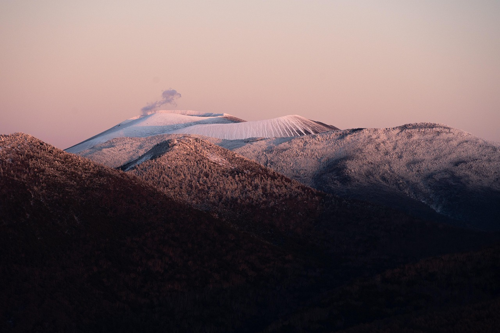
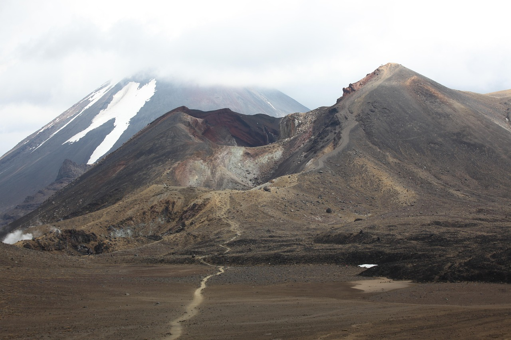
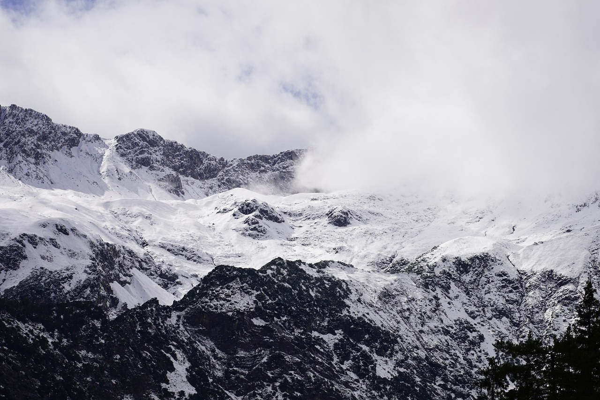

Hover over the images for the filter change!

Photo by yoshitaka2, Pixabay, 2025, All Rights Reserved
Invert

Photo by Juergen_Teltow, Pixabay, 2025, All Rights Reserved
Saturate

Photo by jhenning, Pixabay, 2025, All Rights Reserved
Blur